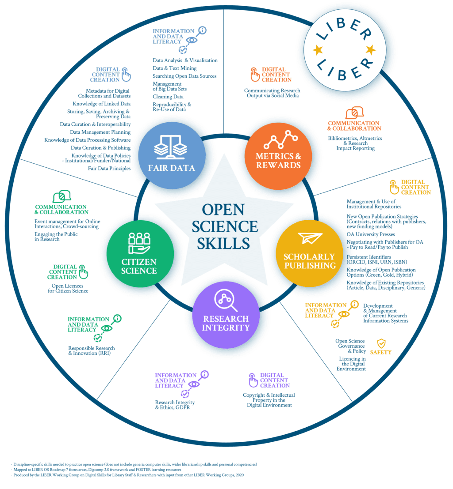

Open Science communities
- Why engage with Open Science communities?
- What is a Community of Practice (CoP)?
- Communities list
- How to engage with Open Science communities
- Pathways for contribution
- Pathways for collaboration
- Pathways for engagement
- Case Study: FORRT
- How to build and lead a community
- Guidelines for building communities
- Mountain of engagement
Open Science communities
Where to find (sustainable) support and help for identifying and using OS tools and resources?
This lesson is the fifth of OpenCore Module 5: Open Science Tools and Resources. It provides a curated list of communities supporting the dissemination of open principles and practices in research and beyond. The lesson complements the previous modules of the OpenCore Course by providing supportive environments fostering the gradual integration of the Open Science concepts explained in them.
The transition to open science requires a profound cultural change in academia and research, and communities are at the heart of a comprehensive change strategy. Hence, it is often extremely helpful to gain the support and help of communities and initiatives that help implement, contextualize, and sustain your open science work. These communities and initiatives can often turn out to be reservoirs of knowledge that could help sustain your open science project in the long run. In this lesson, you will be introduced to a number of communities that you could participate in and engage with to enhance your open science project experience.
Fostering a culture of open scholarship practices through communities can bring unique benefits to learners, practitioners, and trainers. Even if different communities have different missions and scope, all are working towards integrating open scholarship principles into research and education and positively contributing to the advancement of research transparency, reproducibility, rigor, and ethics.
Why engage with Open Science Communities?
- Communities offer a low-entry point into improved research and pedagogical practices. As pedagogical communities welcome scholars from all levels, including early career researchers, they are an accessible space for all wishing to learn and practice open scholarship. By cutting across career stages, these communities, then, become essential to instilling the new and improved values and norms of open scholarship.
- Communities facilitate the co-creation of open scholarship training materials which are crucial in facilitating the integration of open scholarship into research projects.
- Communities also offer a much-needed environment wherein scholars share individual experiences, identify common hurdles, and iteratively enhance their knowledge and advance addressing the unique challenges ensuing from members’ needs.
- Through peer-to-peer exchanges, communities help create a culture of open scholarship, benefiting those within the community, and those that interact with it.
What is a community of practice?
Communities of practice are social learning spaces, where individuals come together to learn a new skill, exchange knowledge and experiences, gain new skills, and then apply what they’ve learned in the contexts of their day-to-day work from the community.
Well-designed and managed communities of practice can support behavioral changes in individuals by connecting them and providing a safe environment where members can exchange ideas and best practices. They can also empower members with the freedom to set and accomplish goals that they are unable to attain on their own.
How to engage with Open Science communities
There are various ways through which you can start engaging with a community. Usually the websites of most of the communities provide information on where a new member can join a community platform and get involved. If there is a newsletter available, you can subscribe to it to know more about the activities taking place within the community. Communities may also have a presence on platforms like Twitter, Facebook, and LinkedIn where they might make announcements about their upcoming initiatives. Community co-working platforms are excellent places to get to know more and interact with current members. Some of the communities also provide onboarding calls that provide a chance of joining the community in a more formal way.
For individuals who prefer written interactions and discussions, GitHub discussions, Discourse, StackOverFlow, and Slack spaces could be excellent to start with. Such written platforms tend to have lots of past knowledge and interactions available that give newcomers an idea of the discussions that take place within a particular community. While all these are excellent places to start with and ask questions, one should be mindful of the fact that most communities are volunteer-run and located across various time zones, hence sometimes it might take longer than usual to receive a response. Always try to be kind, patient, and appreciative.
Pathways for contribution
It is no surprise that newcomers in a community often go on to become future contributors if they find the right pathway. These pathways are explained using personas in the Contributor Pathways subchapter of The Turing Way book. This subchapter defines the different phases of community membership, as below:
- Discovery - How an individual first hears about the project or group or community
- First Contact - How they first engage with the project or group or community, their initial interaction.
- Participation - How they first participate or contribute.
- Sustained Participation - How their contribution or involvement can continue.
- Networked Participation - How they may network within the community.
- Leadership - How they may take on some additional responsibility on the project, or begin to lead.
Top Tip: Many communities and open source projects participate in Google Summer of Code and Outreachy.There are many contributors who had their first contact with open science through Google Summer of Code and Outreachy, and then developed into core contributors with leadership positions.
Pathways for collaboration
There are different ways to collaborate with a community or open project. Contributions spread over many pathways which include sharing resources, reviewing and updating other contributions, fixing typos, improving documentations, mentoring other contributions, or helping in localisating the project and the resources within the project to different languages to support and satisfy the needs of multiple locales. Many of the communities have a low-entry point and don’t require expertise in open science or its digital tools.
The image below shows some pathways of collaboration in the Turing Way, which is an open-source, community-led guide to reproducible, ethical and inclusive data science. Other communities of practices have similar pathways that allow you to interact with their community members without little know-how in open science.
Pathways for engagement
Communities of Practice are designed to offer plural and creative ways to engage with its members. Perhaps the easiest way a member can interact with the community is to introduce yourself on the community’s platform. Another low-stake engagement is to share a relevant resource with the community in appropriate channels. Asking a question, or raising a point of discussion on the community platform, is not only welcomed but potentially instructive and beneficial to other members and the community.
Frequently, communities provide opportunities to give feedback—positive or negative, anonymous or not—which can be very useful to community managers and organizers. Communities of Practice often hold regular meetings—and some also hold seminars featuring pertinent content—and attending these meetings is another form to engage with OSCs.
Some communities offer ways for members to submit resources they know to a database so that others can find it, enriching the community. Reading and learning from a Community of Practice’s own resources and approach is certainly one of the best ways to engage with it. Members can also engage with the community of practice by spreading the word or taking part in ambassadorship programs, which aim to (briefly) train members on the main issues a community is trying to tackle or improve.
As open communities tend to produce resources themselves, and most do so in one language (at least at first), translation efforts are fairly commonplace. These are extremely advantageous to those who would otherwise be disenfranchised and help foster an inclusive and accessible community atmosphere. A mutually beneficial pathway is to contribute to a community’s existing projects and resources which often require constant review and update of its substantive content.
Folks with technical skills can volunteer their expert skills to maintain and improve the community’s internal documentation, resources, modus operandi, databases, code of conduct, and website. Some communities offer mentored contributions on a community-supervised project - for example, in the context of STEM & Data Science - while others offer different types of mentorships such as helping with the supervision of Bachelor/Undergraduate or Master/Graduate theses.
Research- and education-oriented communities of practice often tackle projects collaboratively where members can take part in the process of science-making. Members can join these projects and contribute to them, and be acknowledged for their efforts and work. Some communities extend further on this open-collaboration ethos to allow its members to propose new ideas for research and educational projects.
Case study: FORRT
FORRT stands for the Framework for Open and Reproducible Research Training. It is an interdisciplinary Community of Practice of almost 500 early-career scholars aiming to integrate open scholarship principles into higher education and to advance research transparency, reproducibility, rigor, and ethics through pedagogical reform and meta-scientific research.
Anyone interested in engaging with FORRT can visit its website (forrt.org) and find an explanation of the initiative’s mission, its projects, its open educational resources, and its publications.
Interested individuals can find ways to get involved in several places, with specific attention to FORRT. Once a member enters the community, they are given access to three kinds of channels: welcome/introductions, where anyone can introduce themselves and be welcomed by our community members; general, where anyone can share resources, links, and projects, ask a question, publicize other relevant communities of practice, start discussions, etc.; and community/events/opportunities, where organizers post about onboarding, projects, people, etc. After joining the Slack, a bot sends a DM to users with onboarding information and the ‘Getting Started with FORRT’ document, containing important links, a code of conduct, a description of FORRT’s collaborative projects (their teams, leads, and Slack channels), how FORRT is structured organizationally, and a description of FORRT’s contributorship model and guidelines. Folks can submit resources to a database of curated open science resources, give (anonymous) feedback, subscribe to mentorship programs, and learn how to contribute to FORRT’s research & educational projects (including inclusion, reviewing, and translations efforts— e.g., project Reversals, Glossary and Summary). Lastly, members can propose research and educational projects in the #team-ideas channel.
How to build and lead a community
As individuals, we look for opportunities to apply our knowledge to address problems. The most recent example of this is how the research community has reacted to the pandemic by organizing an unexpectedly large number of hackathons, data modeling initiatives, task forces, and working groups. While joining existing communities can provide rich learning experiences, at times we might realize the need to build a new community. Such communities might come into existence when we discover a lack of a community of our interest close to our geographical region, when we meet like-minded individuals closer to our existing time zones, or when we learn how other communities are developing in their local regions.
A key aspect in building community is to design and build projects that empower others to collaborate within inclusive spaces. Openness shouldn’t be a thoughtless default, but something that is consciously designed into what you and your team are doing, while carefully thinking about the ethics and implications at every step.
Guidelines for building communities
In this section, we have assembled suggestions from The Turing Way, which are derived from the experiences of community and technical specialists to assist researchers in addressing this challenge, particularly when launching a community or a team-oriented project.
- Choose a Communication Platform
- Provide a Project Summary File
- Select a Code of Conduct
- Provide Contribution Guidelines and Interaction Pathways
- Create a Basic Management/Leadership Structure
- Provide Contact Details Wherever Useful
- Identify Failed Approaches, and Stop Them
- Have Documentation and Dissemination Plans for Your Project
You can find more details about these guidelines and related within The Turing Way Guide for Collaboration and contribute to refining them further.
Mountain of engagement
- Leading: A high-touch relationship; we maintain relationships and co-branded events and trainings with alumni and allies to increase the impact, prestige, and reach of both parties’ work.
- Collaborating: A high-touch relationship; we offer professional development through our own events in return for co-creation, localization, and spread.
- Participating: A high-touch relationship; we offer community management and professional development through our own trainings and events in return for soliciting ideas & learning through use.
- Endorsing: A low-touch relationship; we share information with people who gain social capital by spreading it and networking with others who share common interests.
- Learning: A low-touch relationship; we gift resources like open curriculum and get back aggregate data (like downloads, registrations, and views) showing people use our resources and pay attention to us.
Model describes four modes of member engagement that can occur within a community – CONVEY/CONSUME, CONTRIBUTE, COLLABORATE, and CO-CREATE. The concept was included in the later cohorts of Mozilla Open Leadership programme, co-designed and curated by Abigail Cabunoc Mayes (Abby) and Chad Sansing. More can be read in the article written by Abby on Creating Pathways That Invest in New Maintainers. Similar ideas have been previously developed and shared in citizen science, for instance in the post by Muki Hakaye, How many citizen scientists in the world? in 2018 and paper later published by the author with several researchers: Albert, A., Islam, S., Haklay, M., & McEachan, R. R. C. (2023). Nothing about us without us: A co-production strategy for communities, researchers and stakeholders to identify ways of improving health and reducing inequalities. Health Expectations, 26(2), 836–846. doi: 10.1111/hex.13709
Open Science Skills with the Communities; learning and practicing

Open Science Skills Visualisation - Visualisation des compétences en science ouverte. Zenodo. doi: 10.5281/zenodo.472759
The array of knowledge, skills and competencies needed to practice Open Science (OS) effectively can be daunting for many librarians and researchers, particularly those who are new to OS concepts and practices. Identifying which skills are needed is the first step for anyone wishing to upskill themselves or others in OS. - McCaffrey, C., Meyer, T., Riera Quintero, C., Swiatek, C., Marcerou-Ramel, N., Gillén, C., …Egerton, F. (2020), Zenodo. doi: 10.5281/zenodo.472759.
Skills for Open Science are vast, as shown in the image above. Many of are covered in the previous modules introducing a number of digital, data and information skills. Here are a list of resources that can be utilised for learning more about them, while also gaining hands-on deeper experience of integrating open science in your work.
Communities of practice list
Below, we have provided a few recommendations for the communities based on the following resources:
- NSF COSGN/Network of Networks Proposal - 2020
- Open-Science-Community-Saudi-Arabia / CoP list
- Open-Communities-database (promoting/impacted by open science practices)
These are selective, and non-exhaustive list of communities:
Software Communities: PyData, SPEC, rOpenSci, pyOpenSci, PyHC, Research Software Engineering, NumFOCUS
Data Communities: OpenAIRE, SPDF, CCMC, RDA
Communities with the specific goals to advance gender diversity: R-Ladies, PyLadies, Julia Gender Inclusive Community, Women of Color Code, Women who code
Research domain-based Communities: UKRN (and other national networks), PSA, SIPS, CREP, OpenMOOC, IGDORE, Centre for HelioAnalytics, Masakhane (A grassroots NLP community for Africa, by Africans), SisonkeBiotik - Lowering barriers in participatory research for machine learning and health across Africa, Bioinformatics Hub of Kenya Initiative
Pedagogical & Education Communities: The Carpentries, FORRT, ReproducibiliTea, ProjectTIER, SIOS, CREP, NowhereLab, RIOT, ReplicationWiki, Open Education Group, Open Education Network, NASA HEAT, ABRIR, Open Hardware Community, Swedish Youth Astronomical Society
Community of communities: CSCCE, Open Life Science, The Turing Way, Reproducibility Networks, Deep Learning Indaba (collective African ML community), Deep Learning IndabaX chapters - different countries in Africa
Idea: envision questions on reflection in relation to communities, are you a part of any community? What is the value that you take from it? What do you bring to it? Does the balance seem right? What next 3 simple steps could be done to change it, to improve?